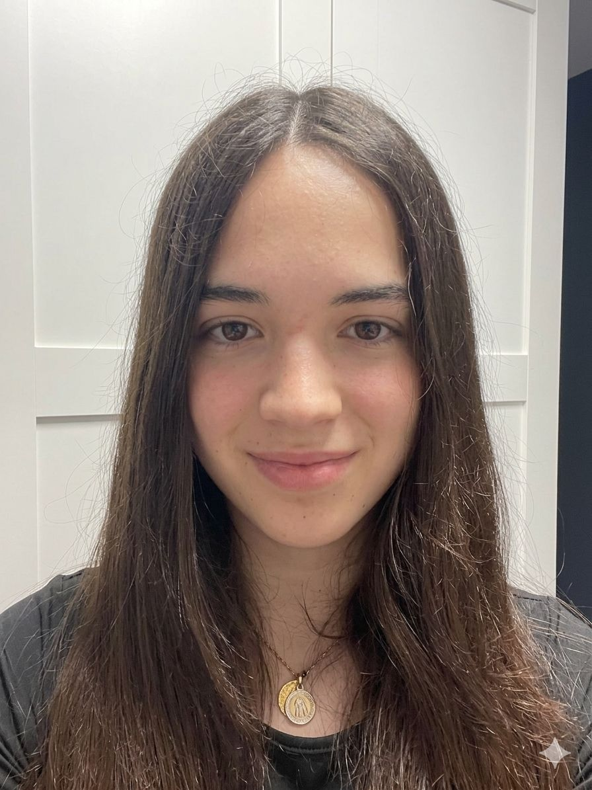
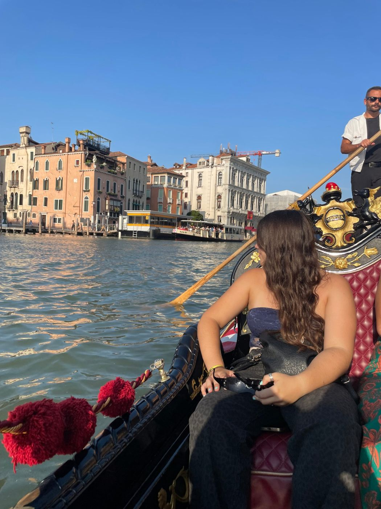

Hola, soy Aylin.
Me gusta contar cosas con imágenes.
Estudio Marketing y Publicidad en Terrassa y creo contenido: reels, webs y diseño gráfico.
Ver qué hago
Sobre mí
Tengo 18 años y soy de Barcelona. Estoy en primero del Ciclo Formativo de Grado Superior en Marketing y Publicidad en la EUM (Escola Universitària Mediterrani), en Terrassa.
Trabajo a media jornada como tutora de juego, cuidando de niños y niñas durante partidos de baloncesto. Hablo castellano y catalán de forma nativa e inglés a nivel intermedio.
Proyectos de contenido
Reels para una empresa de seguros
Vídeos cortos para redes sociales.
Webs con WordPress
Proyectos personales donde practico diseño y estructura web.
Pósters, flyers y carteles
Piezas gráficas hechas con Canva.

Baloncesto
El baloncesto está en mi vida dentro y fuera de la pista: juego, entreno y también trabajo con él.
Fotos



Contacto
¿Colaboramos? Escríbeme:
TU-CORREO@ejemplo.com